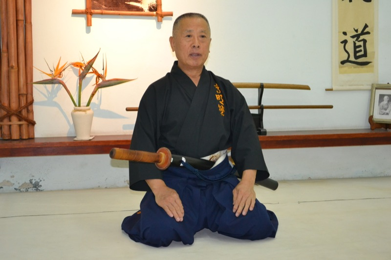
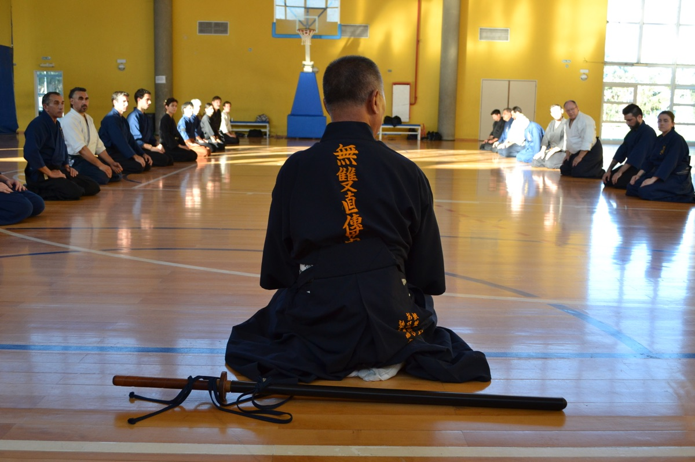
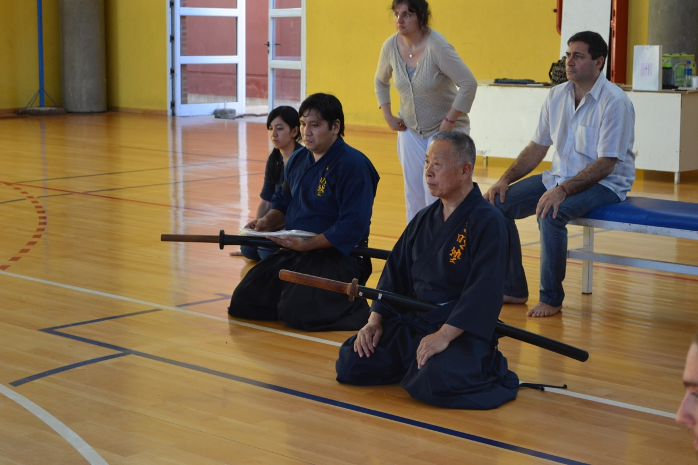

Sekiguchi Takaaki Komei Sensei (関口髙明) es el 21° Sôke (sucesor legítimo) de Musô Jikiden Eishin Ryu Iaijutsu, una de las escuelas más antiguas y respetadas de artes marciales japonesas con espada, fundada en 1568.
Como heredero directo de la línea Yamauchi ha (Tokyo), fundada por Yamauchi Toyotake en 1928, Sekiguchi Sensei lleva sobre sus hombros la responsabilidad de mantener viva una tradición que se remonta a más de 450 años.
Bajo su liderazgo, la escuela Komei Jyuku ha crecido internacionalmente, estableciendo dojos en varios países de América Latina, Europa y Asia, manteniendo una fuerte presencia en Japón y extendiendo el conocimiento de este koryu por el mundo.
Sekiguchi Sensei ostenta los siguientes cargos en organizaciones dedicadas a la preservación del budô tradicional:
Además de su maestría en Iaijutsu, Sekiguchi Sensei posee altos grados en:
En su Musha Shugyo (武者修行 - estudio marcial), aprendió diversos koryu de kenjutsu, naginatajutsu, yarijutsu y jujutsu, lo que le proporciona una comprensión profunda y completa del budô tradicional japonés.
Sekiguchi Sensei busca transmitir las enseñanzas lo más puras posibles, manteniendo viva y joven la esencia del Ryu, evitando que se convierta en un "ballet" o un deporte de octogenarios.
Su enfoque es abierto y acogedor hacia la transmisión de la escuela, con una filosofía que une en lugar de separar:
"Todo el mundo está invitado a participar en el koryu, pero a nadie se le obliga a permanecer."
Esta idea expresa que quien decide entrenar el koryu debe existir un compromiso con él para, a su vez, transmitir el legado a las generaciones futuras. Sekiguchi Sensei enfatiza la perfección técnica junto con el desarrollo espiritual y la disciplina que el camino del Iai exige.
Regularmente viaja a Argentina y otros países para dirigir seminarios intensivos, fortaleciendo el vínculo entre la sede central en Japón y los dojos internacionales, asegurando la transmisión correcta y directa de las técnicas tradicionales.

Sekiguchi Sensei durante un seminario de Musô Jikiden Eishin Ryu en Argentina

Sekiguchi Sensei junto a sus alumnos durante una clase en Argentina
"Iai es el arte de envainar rápido"
Esta definición, aparentemente simple, encierra la profundidad del arte: no solo se trata del desenvaine explosivo, sino del ciclo completo del movimiento, donde el envaine rápido y preciso representa el control absoluto y la maestría técnica.